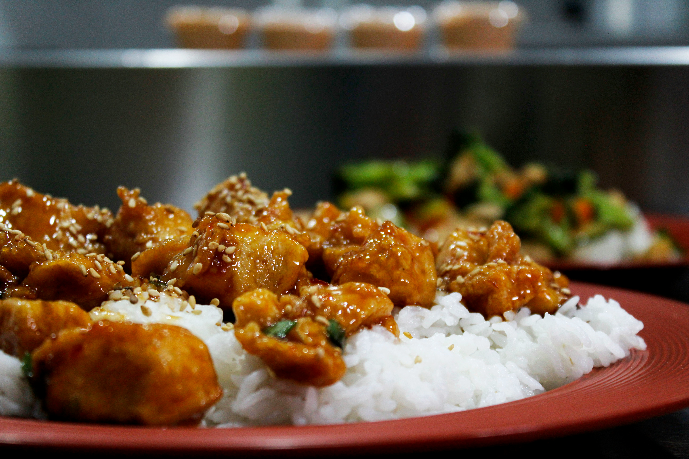

Sweet and Sour Chicken
Back to Homepage

A classic in Asian-American cuisine! Make restaurant-worthy
sweet and sour chicken from scratch in the comfort of your
own home with this top-rated recipe.
Ingredients:
- 1 ¾ cups water, divided
- 1 (8 ounce) can pineapple chunks, drained (juice reserved)
- ¾ cup white sugar/li>
- ½ cup distilled white vinegar
- 2 drops orange food color
- ¼ cup cornstarch
- 2 ¼ cups self-rising flour
- 2 tablespoons vegetable oil
- 2 tablespoons cornstarch
- 1 large egg
- ½ teaspoon salt
- ¼ teaspoon ground white pepper
- 1 ½ cups water
- 8 skinless, boneless chicken breast halves - cut into 1-inch cubes
- 1 quart vegetable oil for frying
- 2 green bell pepper, cut into 1-inch pieces
Steps:
- Combine 1 ½ cups of water, reserved pineapple juice, sugar, vinegar, and orange food coloring in a medium saucepan. Bring to a boil over medium heat; set aside.
- Mix 1/4 cup cornstarch and 1/4 cup water together in a small bowl until smooth; pour into the sauce, stirring continuously, until slightly thickened.
- Place flour, 2 tablespoons oil, 2 tablespoons cornstarch, egg, salt, and white pepper in a large bowl; gradually whisk in 1 1/2 cups water to make a thick batter.
- Add chicken pieces; stir until well coated.
- Heat oil in a large, deep skillet or wok to 360 degrees F (180 degrees C). Fry chicken pieces in preheated oil until golden, about 10 minutes; remove and drain on paper towels.
- Layer green peppers, pineapple chunks, and cooked chicken pieces on a platter; pour hot sweet and sour sauce over top.
- Serve hot and enjoy!